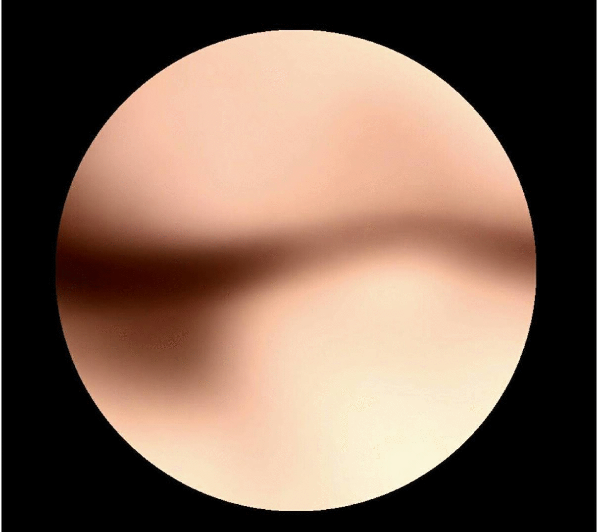

Hi Jie, so tell me about yourself. What do you do for living?

For money, I teach drawings. Pencil, charchol, watercolor, oilpainting...etc. For me, Creative things does not earn as much.
Add: How would describe yourself as an artist? What is your goal?
I would say that i want to bring the perspective of Asian life to International. So people from all over the world can experience our thinking and lifestyle, getting attention from International art society is my goal. To achieve that goal, I know there's still long way to go so I am going to work harder.
What is your opinion about art & design in Taiwan?
As a Taiwanese, well I would say 'Asian'. We are facing more complex ethical issues, the impact of Western culture and historical position. We need to find our own way to be creative instead of copying and learning from Western designs, there are actually many local artist who value their own creation but there's not a legit platform for them to emancipate.
Is there something special about it?
I'm not sure if it's 'special' but i would say it's an area that's too crowded and bustling, a more component-style society.
By that I mean personal value, because of social system individual feelings and emotions are eliminated. The society values more on functionality therefore especially for artist, it is a larger hindrance.
Do your works get inspired by Taiwanese culture?
Defitnetly, especially the religious culture in Taiwan, there isn't a specific believe so I would apply languages that's not obvious or show the ambiguous feeling that reflects our culture.
Add: Can me show you some of your work?
Yeah, of course. Hold on
This piece is call "The cell"


Through sexual activity, I think I separated the part that belongs to me. It contains my fantasy of love, the idea of life, a part of the body, etc., and it is given to another person. It is like performing Like cell division cells, she also owns part of me and takes me to continue life. The circular shape of the screen is in the window mimicking a microscope. Through a vaguely overlapping body, it looks like the appearance of the cell in progress, and studies and observes itself as the smallest unit of the “human whole”. If the cell division is for the survival of the whole/individual, what kind of role do I play in it? For what exists, if consciousness is transmitted in it and what is passed, the appearance of “human/individual” will be What, where is it going? In autologous cell research, I tried to look and peep.
As a Taiwanese artist, what are the limitations?
A problem artist face in Taiwan is 'Political correctness', there are boundaries that limits us to create or go against. There's a specific term for 'aesthetics', people believes to go with a certain path, we can't go against it or I would say we are not ready to do so.
What are some bias or thinking you think other countries have toward Taiwanese art?
Taiwanese design had been influenced by Japanese design deeply, probably because Taiwan was their colony for 50 years. Implicit aesthetics, sense of hidden and less direct to emphasis what artist want to show.
That's so interesting. I heard you also do photography, would you like to share some of your work?
This photography work is call "Yesterday's child".I took pictures of aged Taiwanese man and women, representing their persistence on life, no fear apon death and to recapture the memoriez and important memories of life. Showing people from local areas, the form and pose creates the tension of one’s persist on their belief.